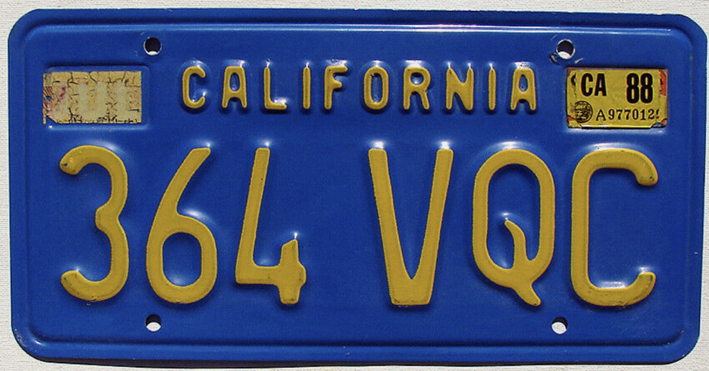

I love California license plates. I love how easy the sequential pattern is to follow. I love how there are different styles for different eras. Perhaps it's not the most safe to be looking at everyone's plates and trying to determine what year they got their car registered, but I would say it doesn't effect my driving too much.
I have a challenge for myself where I try to determine where in the sequence we added "dmv.ca.gov" onto the bottom of the plates! It's definitely available online but I refuse to look it up. From inspecting many plates, I currently believe it was added sometime in between 6TOD... and 6TS... Do NOT spoil it for me. It is a very fun game.
My Favorite Styles
The 70s plate! It's the classic blue and yellow plate. Technically it was the plate of the 70s and early 80s but my personal preference is the larger die, which was a characteristic of the early to mid 70s. Fun fact! I recently purchased my own 70s plate! Catch it in my dorm next year.

Mid-70s plate. Note the larger serial die.
The 1987 to 1993 plate (not the specialty Golden State one)
Late 80s/Early 90s
The Sesquicentennial - 150 Years plate! Not so much for styling but I enjoy seeing them.
Sesquicentennial plate
You want to join in on the fun? Here are some general rules
The true 60s (black background, yellow lettering) plate has large serial die (letter size) and only 6 characters. If there are 7 characters and/or smaller die, its a legacy plate (first available in 2015)
In 2015 the legacy plates were first offered and needed a minimum of 7,500 orders to be produced. Only the 60s design made it in! The 50s and 70s designs did not get enough orders.
The "70s" plate (that was the standard till 1987) has a blue background and yellow lettering.
70s plate had larger die until late 1977.
In 1980 we switched from a 123 ABC format to a 1ABC123 format (hence why we switched to narrower die!)
The late 70s (from 1977-1979) plate has a larger gap in the middle as a result of having narrower die, but still following the 123 ABC format!
The "Golden State Plate" was an extra cost-optional plate intoduced in 1982, then it briefly became the standard in 1987, before it was replaced by the '88-'93 plate.
When the 1ABC123 format runs out soon, we will switch to a 123ABC1 format! Originally we thought it would run out by 2027, but it started running out faster than we anticipated (perhaps late 2025). So, in December 2023, the DMV decided on this new sequence. For some reason all the news articles on this are from April 2025. Don't be fooled by them. They decided this over a year ago. The public is slow to care about the California license plate system. Not me though.
The DMV added "dmv.ca.gov" on the bottom of plates in 2011. Nothing else changed, just the addition of the website.
This is not necessarily a helpful fact, but license plates are all made by innmates at Folsom State Prison.
Commercial plates have ran through multiple serial codes. Here's some general stuff to note:
From 1976 to 2010 we used the 1A12345 serial code, until we ran reached 8Z99999 (9XXXXXX was reserved for tractor trailers).
In 2010 we began using 12345A1 for commercial plates
From '63 to '67 we used A 12 345, but ended this code at V 99 999
From '67 to '76 we used 12 345 A as the commercial plate code.
These are just a few broad and easy rules I use the most. There's a lot more information on the "Vehicle registration plates of California" Wikipedia page! Beware, one can get lost in it...